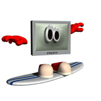

artemdubrov2007@gmail.com
Last Updated: August 22, 2025


Hi there! I'm OUTRUN1987, and this is my personal website!
^^ This one is called Takeoff. I made it during my trip to Sakhalin Island in Russia! The flight lasted for whole 8 hours and it was pretty boring... So, I came with this idea of a song! I felt like this song should be synth only and have some futuristic arp. Also, pluck melody somehow reminds me of Avatar movie (2009) by James Cameron
Arcade Center is a track I wrote at the summer camp of 2022. It was a fun time! One day I sudenly felt extreme vibe of Arcade Cabinets and decided to write a song 'bout it. Classic "saw" arp, lead melody, basic drums and fast race-style bass. That's how I fell about ARCADE CENTERS! PURE DRIVE!!!!
Nightcall, as you probably know, is a very popular song from Kavinsky featured in one of my favorite movies "Drive". More about the movie I'll tell in movie section sometime in future (or you may already see it rn, if you ARE from future :) The song is amazing and all, but it isn't meant to suit fast paced racing, but rather slow and relaxing night ride. That's what I tried to fix! "Racing Nightcall" that's what it is!
Thanks for stopping by! Good luck surfing!
